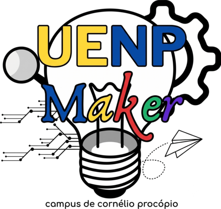

Espaço Maker
Laboratório multidisciplinar da UENP em Cornélio Procópio para projetar, cortar, imprimir e construir, e para capacitar professores da educação básica.
Agendar usoVer postagens
Sobre
O Espaço Maker do Campus Cornélio Procópio é um laboratório para o design e a construção de projetos variados e para a formação de professores da educação básica. Conta com impressoras 3D, cortadora e gravadora a laser e plotter de recorte.
Faz parte do projeto de extensão “Espaço Maker Campus Cornélio Procópio: da pesquisa à inovação”, da Pró-Reitoria de Extensão e Cultura (PROEC) da UENP, vinculado à Chamada Pública CP 19/2023. O projeto apoia pesquisas e propostas pedagógicas voltadas à cultura e à aprendizagem maker.
A equipe reúne bolsistas e estagiários selecionados por editais da PROEC, que costumam pedir conhecimento em modelagem 3D.
- Coordenador
- Prof. Dr. João Coelho Neto · joaocoelho@uenp.edu.br
- Como utilizar
- O uso é feito sob agendamento. Peça seu horário.
- Onde estamos
- Bloco H (Bloco da Matemática), salas H22 e H17. UENP Campus Cornélio Procópio, PR 160, Km 0 (saída para Leópolis), CEP 86300-000. Abrir no mapa
- Contato do campus
- (43) 3520-1770
- Redes
- @uenp_maker_ccp no Instagram